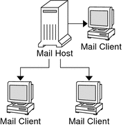
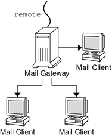

|
|||
|
Part I Network Services Topics Part II Accessing Network File Systems Topics 4. Managing Network File Systems (Overview) 5. Network File System Administration (Tasks) 6. Accessing Network File Systems (Reference) 8. Planning and Enabling SLP (Tasks) 10. Incorporating Legacy Services Setting Up Mail Services (Task Map) Building the sendmail.cf Configuration File How to Build a New sendmail.cf File Managing Mail Delivery by Using an Alternate Configuration How to Manage Mail Delivery by Using an Alternate Configuration of sendmail.cf Administering Mail Alias Files (Task Map) Administering Mail Alias Files How to Initiate an NIS+ mail_aliases Table How to List the Contents of the NIS+ mail_aliases Table How to Add Aliases to the NIS+ mail_aliases Table From the Command Line How to Add Entries by Editing an NIS+ mail_aliases Table How to Edit Entries in an NIS+ mail_aliases Table How to Set Up an NIS mail.aliases Map How to Set Up a Local Mail Alias File How to Create a Keyed Map File Administering the Queue Directories (Task Map) Administering the Queue Directories How to Display the Contents of the Mail Queue, /var/spool/mqueue How to Force Mail Queue Processing in the Mail Queue, /var/spool/mqueue How to Run a Subset of the Mail Queue, /var/spool/mqueue How to Move the Mail Queue, /var/spool/mqueue How to Run the Old Mail Queue, /var/spool/omqueue Administering .forward Files (Task Map) How to Change the .forward-File Search Path How to Create and Populate /etc/shells Troubleshooting Procedures and Tips for Mail Services (Task Map) Troubleshooting Procedures and Tips for Mail Services How to Test the Mail Configuration How to Test the sendmail Rule Sets Part V Serial Networking Topics 15. Solaris PPP 4.0 (Overview) 16. Planning for the PPP Link (Tasks) 17. Setting Up a Dial-up PPP Link (Tasks) 18. Setting Up a Leased-Line PPP Link (Tasks) 19. Setting Up PPP Authentication (Tasks) 20. Setting Up a PPPoE Tunnel (Tasks) 21. Fixing Common PPP Problems (Tasks) 22. Solaris PPP 4.0 (Reference) 23. Migrating From Asynchronous Solaris PPP to Solaris PPP 4.0 (Tasks) 25. Administering UUCP (Tasks) Part VI Working With Remote Systems Topics 27. Working With Remote Systems (Overview) 28. Administering the FTP Server (Tasks) 29. Accessing Remote Systems (Tasks) Part VII Monitoring Network Services Topics |
Planning Your Mail SystemThe following list describes some concerns that should be part of your planning process.
After you have completed the planning process, set up the systems on your site to perform the functions that are described in Setting Up Mail Services (Task Map). For other task information, refer to Task Map for Mail Services. Local Mail OnlyThe simplest mail configuration, as shown in Figure 13-1, is two or more workstations that are connected to one mail host. Mail is completely local. All the clients store mail on their local disks, and the clients act as mail servers. Mail addresses are parsed by using the /etc/mail/aliases files. Figure 13-1 Local Mail ConfigurationTo set up this kind of mail configuration, you need the following.
For task information about setting up your mail service, refer to Setting Up Mail Services. If you are looking for a particular procedure that is related to setting up your mail service, refer to Setting Up Mail Services (Task Map). Local Mail and a Remote ConnectionThe most common mail configuration in a small network is shown in Figure 13-2. One system includes the mail server, the mail host, and the mail gateway that provides the remote connection. Mail is distributed by using the /etc/mail/aliases files on the mail gateway. No name service is required. Figure 13-2 Local Mail Configuration With a UUCP ConnectionIn this configuration, you can assume that the mail clients mount their mail files from /var/mail on the mail host. To set up this kind of mail configuration, you need the following.
For task information about setting up your mail service, refer to Setting Up Mail Services. If you are looking for a particular procedure that is related to setting up your mail service, refer to Setting Up Mail Services (Task Map). |
||
|